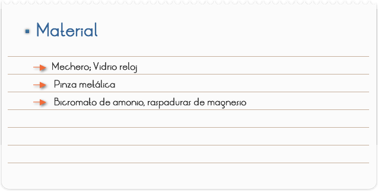
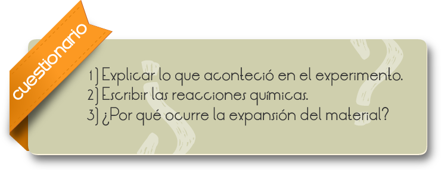
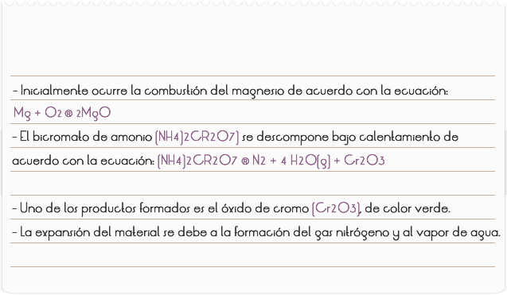

Objetivo
Estudiar y analizar una reacción de descomposición.

1) En el vidrio reloj, colocar 2 puntas de espátula de bicromato de amonio y hacer un montoncito.
2) Colocar un pedazo de magnesio en la extremidad de la pinza metálica y calentar sobre la llama del mechero (cuidado con la intensidad de la luz emitida en la quema del magnesio).
3. En cuanto el magnesio comience a quemarse, colocar rápidamente sobre el bicromato de amonio, observar y anotar lo que acontece.

RESULTADOS Y CONCLUSIONES
